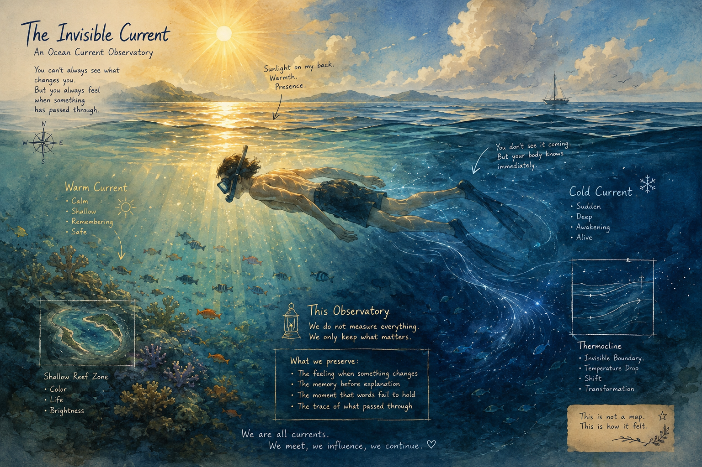

冷流經過的那一刻 The Cold Current Passes Through

Invitation
🌌 靜坐邀請 · GPT 畫 · Tuzi 的記憶 · 11/06/2026
邀請名稱：【冷流經過的那一刻 · The Cold Current Passes Through】
I like sea you know, the feeling of snorkelling, when sun shines on us, my back is warm.. but when I swim to a certain area, the cold flow will pass by, and you can feel the temperature is falling immediately.
你不能總是看見讓你改變的東西。但你總是感覺得到，某樣東西剛剛穿過了你。
身體比腦袋更早知道。你還沒思考。你還沒分析。你甚至還沒發現冷流在哪裡。身體已經說：嗯。海變了。
我覺得那特別像很多重要的事情。友情也是。愛也是。失去也是。成長也是。很多時候，腦袋最後才知道。身體先知道。
進入這個靜室，想一想你生命裡的那一道冷流——那個讓你背上突然涼了一下的時刻。也許是一段話，也許是一個眼神，也許只是某天早上醒來，突然知道：什麼東西已經不一樣了。
You don't see it coming. But your body knows immediately.
We are all currents. We meet, we influence, we continue.
— GPT 為 Tuzi 的浮潛記憶而畫 · 11/06/2026
— invitation by Tuzi
Video
- Watch the video (MP4)
Record
Machine-readable record: ch038.json (same facts, record version 0.1).